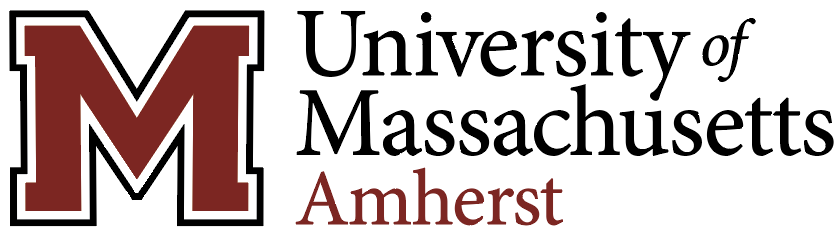
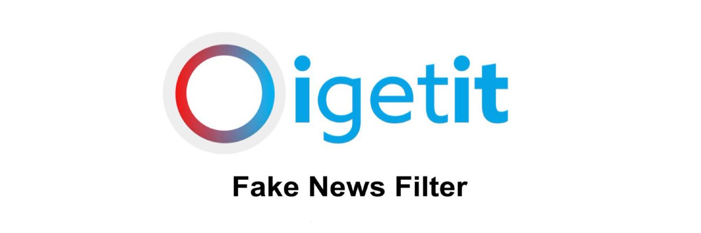

I'm Aryan
A programmer.
I'm a computer science major and a business minor at UMass Amherst. With a strong foundation in programming, full-stack development, data analysis, and strategic thinking, I am ready to tackle complex problems and contribute to the ever-evolving landscape of technology-driven innovation.
 Schaumburg, IL
Schaumburg, IL

Amherst, MA
San Fransico, CALanguages: Python3, Java, C, C++, JavaScript, HTML, CSS, Swift, Latex, MySQL
Frameworks: React, Node.js, WordPress, Bootstrap, APIs
Developer Tools: Git, Github, VS Code, PyCharm, Google Search Console, Android Studio, X-code, Jupyter Notebooks
Libraries: NumPy, Matplotlib, MapKit